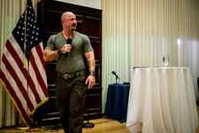

< < < Back
How Left-Wing Activists Tried To Shut Down This Year’s NPI Conference – Return Of Kings
Last week I traveled to Washington, D.C. to attend the National Policy Institute’s conference “Become Who We Are.” If you don’t know what NPI is, it’s an identitarian think tank run by Richard Spencer, best known as the founder of Alternative Right and the former editor of Taki’s Magazine (both of which I’ve written for in the past).
NPI’s conference was focused on inspiring whites to rise above mainstream consumer culture and strive for greatness, featuring rousing speeches from the likes of French New Right figure Guillaume Faye, Way of Men author Jack Donovan, Radix European editor Roman Bernard, and many others. Return of Kings publisher Roosh also dropped by the conference for a couple hours.
While I’m no stranger to identitarian gatherings, having attended this year’s American Renaissance conference, NPI’s conference offered a distinctly different experience from that event. The National Policy Institute is a relatively young organization, having only been founded in 2005, and the location of the event—just one block away from the White House—gives the conference a more intimate and urbane atmosphere then AmRen’s big tent.
It also makes NPI easier for leftist radicals to attack.
While anti-racist activists tried to protest at AmRen, the conference’s remote location and the police protection provided by Tennessee state troopers deters the worst offenders. In contrast, mask-wearing antifas actively swarmed the National Press Building and tried to physically assault NPI attendees. While they failed to shut down the conference, I had my own run-ins with these thugs and things nearly got ugly.
Here’s what happened.
NPI Is Here To Stay
The inanity began literally as soon as I stepped out of my cab. In front of the National Press Building, a group of crusties who look like they believe that bathing is capitalist oppression started jeering my friend and I.
“You here for the National Policy Institute?”
“Yeah,” I replied.
They immediately started with the heckling: “Fuck off, Nazi scum!” “Racists!” “Neo-Nazis!” “Get out of my city!”
I wasn’t in the mood for diplomacy, so I flipped them off as I was walking into the building. Inside, I linked up with another group of attendees that included speakers Kevin MacDonald (author of The Culture of Critique) and Sam Dickson, as well as Red Ice Radio’s Henrik Palmgren and Lana Lokteff (full disclosure: Palmgren interviewed me for Red Ice Radio a few months back), where we joked about the antifas’ thrift store rags and lack of hygiene.
After registering, I had to leave the building to link up with a friend of mine a couple blocks away. As I walked out, the antifas’ took notice of my name tag and yelled out, “Nice to meet you, Matthew!”
“Racist, sexist, anti-gay: NPI is here to stay!” I chanted at them as I dashed up to F Street.
After meeting up with my friend, we took a wrong turn and walked into the National Press Club’s parking garage, where we were cornered by a cute blonde reporter from The Daily Beast. As she grilled my friend and me on why we were attending the conference, I realized I had seen her before.
“Are you Olivia Nuzzi?” I asked.
“Yes.”
“Oh yeah, I recognize you from your work at NSFWCORP.”
“You read Not Safe for Work Corporation?” She seemed shocked that an evil racist recognized her.
After a few more questions, Nuzzi thanked us and walked off. She didn’t end up using any of our comments in her report.
My friend and I realized we couldn’t enter the building from the garage, so we went back outside. As we went up to the front doors, a particularly unclean-looking protester tried to physically block us from going inside. Whenever we tried to lunge for a door, he would slide in front of us, like a school bully who waves his hand in front of you going, “I’M NOT TOUCHING YOU! I’M NOT TOUCHING YOU!”
“Whatcha here for?” the syphilitic antifa asked.
“I’m using the bathroom,” I snapped sarcastically.
“Oh? Well, you can go right here.” His lips curled into a smug grin.
“We’re here for the National Policy Institute,” my friend piped up.
“Oh, the National Policy Institute? So you’re fuckin’ neo-Nazis, eh?” Behind us, the other five or so antifas were jeering us.
Suddenly, one of the security guards opened a door for us, saving me from losing control and snapping the antifa’s dime-stack neck.
Shit Gets Real

The antifas had planned two anti-NPI protests; one for when the conference began in the morning, and a Halloween-themed costume protest for seven at night. I was hanging with Roosh, F. Roger Devlin and a few other attendees at a bar down the street when we came back to the conference around 7pm. No protesters in sight. Roosh had to leave early, so the rest of the guys and I went inside.
Roughly an hour later, I’d stepped outside of the conference room to stretch my legs when one of the guys came up to me.
“Just so you know, Matt, don’t leave the building alone. We got into a scuffle with the antifas.”
“What the fuck?”
“Yeah, I stepped outside of the building. The antifas have guys posted at every entrance and a couple of them began stalking me. I had to lose them by going through alleys and I even had to duck through a restaurant—went through the kitchen, they didn’t follow me in—but they kicked the shit out of one of our guys.”
“Holy shit!”
“Yeah, his face is all busted up. It was four of them attacking him. These guys aren’t fighting fair. They’ll gang up on you, sucker punch you, attack the elderly; we’re gonna have to figure out a way to leave without getting attacked. We don’t want them going after our elderly or following people home on the Metro.”
At the end of the final segment of the conference—a performance by neofolk musician R.N. Taylor—Richard Spencer called us all in and explained the game plan. We were all going to leave the building simultaneously through one of the back entrances, scare the antifas away through sheer numbers. Spencer advised us not to fight back if one of them tried to hit us, because we’d end up being tarred as the bad guys if we tried to defend ourselves.
Assembling in the lobby of the building, we emerged in one great mass of shitlords. There were only about four antifas at this particular exit: three masked men and an elderly hippie with a megaphone talking about how his grandfather “fought in World War II to rid the world of Nazi scum.” No one took a swing at me, but I later found out that one of the antifas kicked Sam Dickson, who is nearly 70 years old.
Fighting Intolerance With Violence
The sheer irony of using physical violence to deter people who you think might engage in physical violence (based on nothing other than your own prejudices) is lost on the left. As both the response to Roosh’s speeches in Canada and the antifa attacks at NPI show, the blind emotionalism and Manichean morality of the left leads them to believe that they have the right to use any means necessary to shut down “racists” and “misogynists,” even means that are illegal and/or immoral.
The left’s accusations against NPI in particular and alt-rightists (or neomasculinists) in general have no grounding in reality. Without exception, everyone I met at NPI was cordial, well-dressed, and intelligent. Indeed, I was recognized by a huge number of my fans, many of whom told me that my writing was what turned them on to the alternative right. Not only that, a good majority of the conference’s attendees were young, easily identified by “Millennial” written on their name tags (NPI offered discount tickets for those under 30).
To believe that your ideas are so righteous that anyone who disagrees with them deserves to be fired from their job, hounded on social media, and even physically assaulted makes you far more of a “fascist” than anyone associated with the National Policy Institute.
Overall, despite the antifas’ attempts to shut it down, “Become Who We Are” was a rousing success. If you’re on the fence about attending one of these conferences, stop thinking about it and take the plunge. The speakers are fantastic, the atmosphere is convivial, and the experience of being in a room with close to 200 guys (and gals) who are on the same ideological wavelength like you is an experience you can’t pass up.
Read Next: 3 Things I Learned At This Year’s American Renaissance Conference